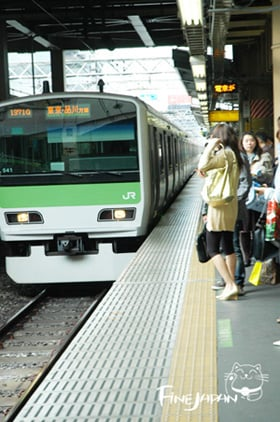
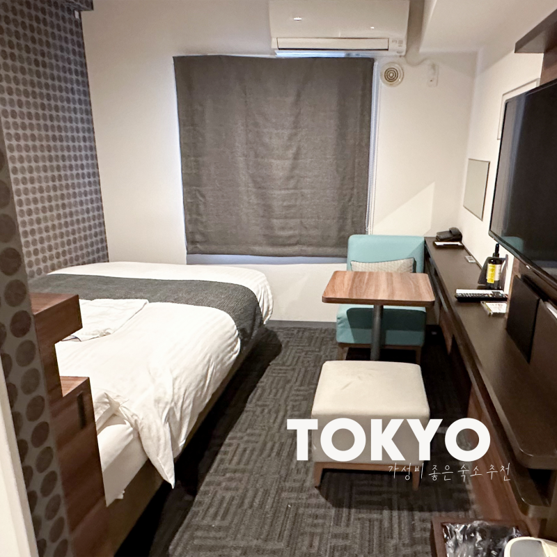

제주도는 렌트 카 잡고 편하게 여행다니면서
좋은 호텔에서 자는거 가정하면서


일본은 뚜벅이로 돌아다니면서 지하철 타고 다니고
잠도 비지니스 호텔에서 자는걸 가정함
그러면서 제주도 갈바에야 싸고 저렴하고 가성비 좋은 일본 간다고 함
제주도는 렌트 카 잡고 편하게 여행다니면서
좋은 호텔에서 자는거 가정하면서


일본은 뚜벅이로 돌아다니면서 지하철 타고 다니고
잠도 비지니스 호텔에서 자는걸 가정함
그러면서 제주도 갈바에야 싸고 저렴하고 가성비 좋은 일본 간다고 함
둘 다 좋음
좀 뭐랄까 결이 다른게
제주도는 지방 공항에도 언제든 표가 있으니 가볍게 가고
일본은 연차 끼고 가는 거지 뭐
사실 비행기표 싸게 잡으면 동남아 4성급가는게 더 만족감이 있긴 해 일본은 숙박 자체가 너무 비싸서 길게 가면 갈수록 여행 단가가 오르지
제주도 옹호는 아닌데 지방민으로써 우리나라 사람들 좀 신기한게 국내 여행지는 성수기 기준으로 맨날 비싸다고함..세계 어딜가나 성수기때는 모든게 비싸지는데 좀 이런 억까가 있긴 함
댓글만봐도 여론이 보이는구만
숨은빚들 여론아니고?ㅋㅋ
비슷허지않나?
제주도 숙소 다 50~60만원
일본도 숙소 그정도
뭐 어딜 잡길래 50~60만원이 나오는거임
일본만큼 돈쓰면 제주도도 나름 재밌긴해
근데 결국 국내여서 새롭진 않으니
좀더 써서 해외가 낫다 뭐 그런거지
제주 6년연속가는중. 갈때마다 200 씩은깨지는데 나는좋다 일본도 많이가봤고 해외도 많이갔는데 제주만한데가없다
막상 가서 다 놀고 쓰면 제주도가 결국 쌈 ㅋㅋㅋㅋ
그리고 일본은 가까워도 해외라고 집에서 공항 1시간-체크인-출국-비행기2시간-입국수속-공항에서 도시까지 1시간 하면 6~8시간은 걍 날리는데 제주도는 버스마냥 가는것도 한 몫 하고
그렇지 일본은 맘먹고 준비해야지 가고 제주도는 그냥 감 이게 좋은거지
뭔가 화가 많이 났네. 왜 화가 난거지?
제주도에 전철 없어서
이새낀 뭐야 비교 예시 꼬라지 봐라
맞말이긴해 관광지가서 눈탱이가격으로 다사먹고
일본은 로컬찾으면 다를수밖에
제주도 근데 할게 머있음? 갈때마다 카페-수목원 하고 아쿠아리움 한번 찍고 돌아오는거같은데
난 아무것도 안할려고 제주도 여행하는 건데 관광이면 다르겠지만
외국인들이 서울오면 렌트하냐 지하철타지
여행지로서 도쿄=시드니=싱가포르=샌프란시스코
제주도=그냥 제주도
제주도에 지하철 있냐
고아같노
그거라도 안하면 제주도 갈 메리트가 있긴해?
너 제주도 일본 둘 다 안가봤지? 제주도는 비용 저점이 존나 높음 싼마이 모텔급 호텔 가도 10만원임 현지인이 가는 개지랄 가성비 음식점 갈거면 제주도 왜감? 인스타 나올만한 예쁘장한 곳 가면 해물라면도 인당 2만원 가까이 하고 제주도 풀빌라 30짜리 갈 돈이면 30 써서 료칸 갈 수 있음 ㅋㅋㅋ 일본이랑 다르게 교통 좆박아서 제주/서귀포 따로 봐야하니 렌트카 사실상 필수고 이거따지고 저거따지고 하면 한 번 여행에 10-20 차이나는데 체감은 비교할 수가 없음 일본은 비행기값 잘잡고 캡슐호텔에 현지인 가는 600엔-1000엔대 음식점만 갔다오면 제주도보다 더 싸게도 갔다올 수 있음 제주도 너나 가셈
제주도 쌈마이 모텔급 허텔 가면 3만원짜리도 잇는데 먼소리여...
넌 제주도가라 난 일본갈게 ㅅㄱ
제주도 나쁘진 않지.
근데 일본가면 바가지도 없고 한국에선 못보는것도 있고 먹을거리도 다름.
그런데 제주도랑 일본이랑 가격차이가 많이 나냐하면 솔직히 크게 안남.
일본에서도 렌트할꺼면 숙소도 시외로 나가면 그만.
개인적으론 제주도 갔을때 제일 불쾌했던게 어딜 가더라도 관광객 바가지가 존나게 심하다는거임.
잘 찾아보고 가면 바가지 없다고 하는데 바가지 없는곳을 찾아다녀야 하는 곳이 제대로된 여행지임?
제주 교통이 안좋으니까 렌트 하는거지
숙소도 제주 4성급 이상 잡을 정도면 일본도 료칸 잡을 사람들이지
이건 비교대상군을 다르게 잡아놓고 비교한거야
숙소도 제주 4성급 이상 잡을 정도면 일본도 료칸 잡을 사람들이지 <- 팩트 ㅋㅋㅋ
남이 어딜가서 어떤형태로 여행하든 그 사람 마음 아닐까
배타고 가니까 진짜 일본이 더싸긴한데?
같은 성수기로 비교해야지, 한여름 극성수기 제주도와 극비수기 도쿄 오사카를 같은 선상에 놓고 비교하고선 비싸다고 툴툴댐 ㅋㅋ 8월 기준 비교할거면 일본도 성수기 관광지인 홋카이도랑 비교해야하는데 비용차이 압도적임.
맞말이긴 함. 일본 숙소 좁아터진건 낭만이고 제주도 리조트는 바가지라함 ㄹㅇㅋㅋ
어 제주도(소중국) 잘가~~
근데 생각해보면 국내 여행지가 해외 여행지랑 비교 선상에 오르는 거 부터가 문제 아닐까
똑같은 기회비용이면 일본감 너나 제주가라
10월 중순 제주 동쪽 관광 추천받는다
시발 여행 다닐 시간이 어딨는데....
아냐 찾아보면 일본이 더 싸